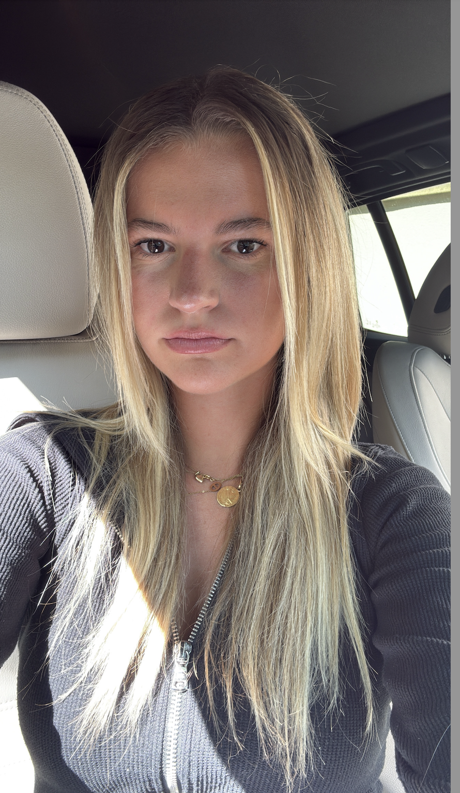

Étudiante à l'ICN Business School • Alternante chez Darty • Passionnée de Cinéma
Une passion qui nourrit ma créativité. Je vois chaque film comme une leçon de perspective et une source d'inspiration pour comprendre le monde qui m'entoure.
Mon alternance en tant que vendeuse me permet d'affiner mon sens du contact et ma rigueur commerciale au sein d'un leader de la distribution.
Actuellement à l'ICN Business School, j'allie théorie académique et expérience terrain pour devenir une professionnelle polyvalente.
Initiée au développement web via Le Wagon, je m'intéresse de près aux nouvelles technologies et à leur impact sur le business moderne.